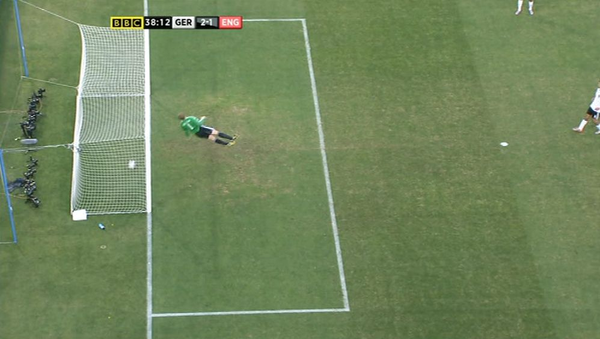

Computing has developed and helped different sports become fairer in general with more changes being introduced all the time
The application of computing with goal-line technology has completely revolutionised the game, it has erased any uncertainties from referees or umpires; notably in football,
the signal that the ball has crossed the line is sent to the watch on their wrist immediately. This highlights how much fairer the game has been made, remember South Africa, 2010, specifically 15:38 on the 27th of June.
This is when Frank Lampard's 'goal' was ruled out due to it not crossing the line despite nearly everyone in the stadium agrees it was at least a foot past Manuel Neuer's goalline.
These human errors can now be almost eliminated due to the application of computing and this can be shown further with more developments being contemplated to make the game fairer.
